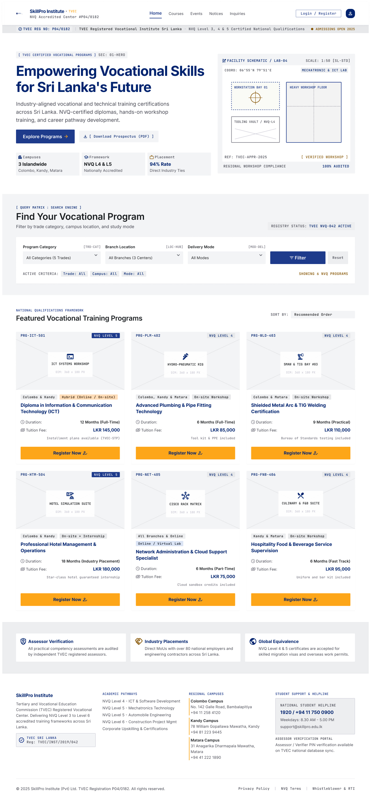
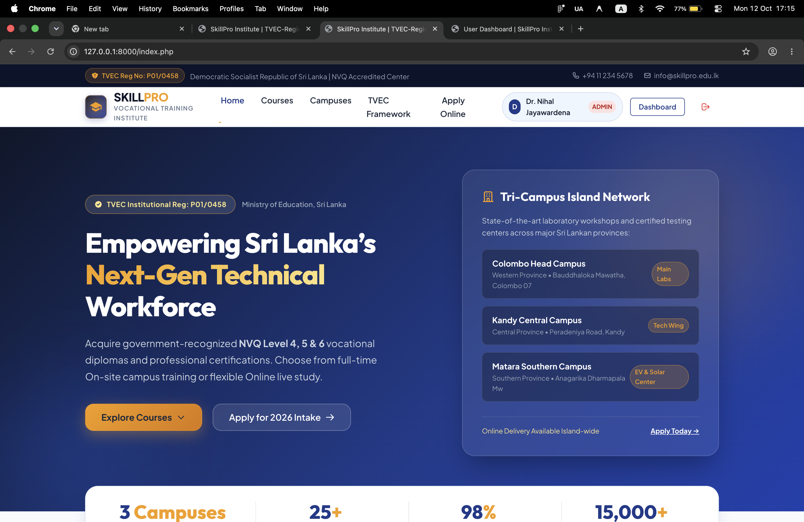
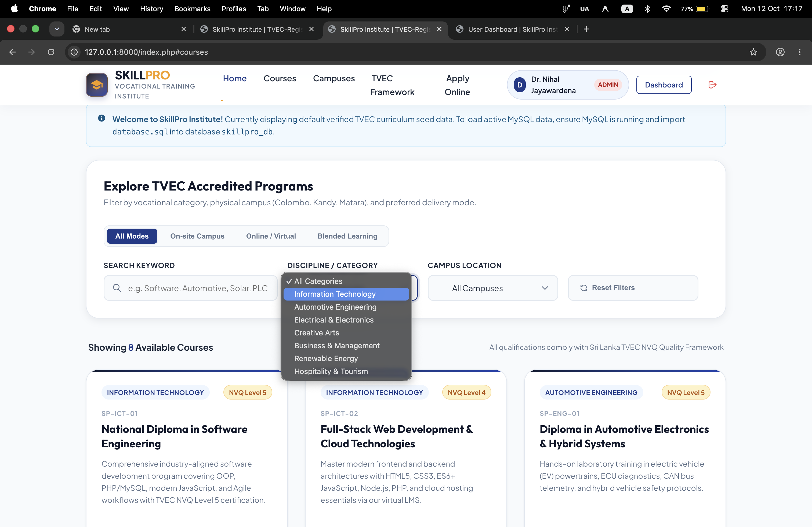
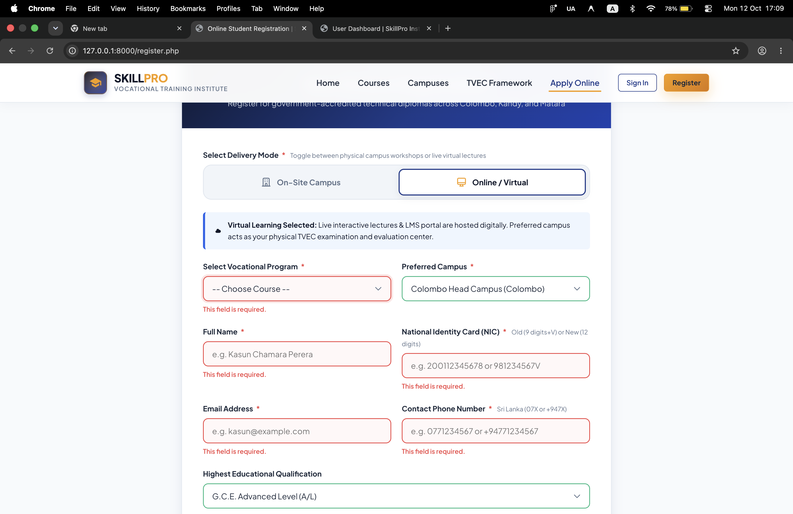

SKILLPRO INSTITUTE
A human-centered vocational education portal engineered to connect students with accredited technical qualifications through dynamic multi-criteria course discovery and instant guidance feedback.

EMPOWERING VOCATIONAL LEARNING THROUGH CLARITY
Transforming confusing vocational course listings into an intuitive, accessible pathway for students seeking verified technical careers.
• THE USER PROBLEM & CHALLENGE
Prospective vocational students often struggle to identify which campus offers their desired technical certification, what entry qualifications are expected, and how to enroll without navigating through broken links or archaic registration PDFs.
- Replaced scattered course lists with a unified, real-time multi-criteria filter matrix.
- Designed clear qualification ladders showing exactly what prerequisite skills are needed.
- Eliminated form submission anxiety with friendly inline visual cues.
• THE UI/UX DESIGN SOLUTION
Developed an accessible, high-contrast design system featuring distinct discipline tags, a prominent multi-branch search engine, and an empathetic enrollment flow that provides instant helpful guidance whenever an input requires clarification.
THOUGHTFUL EDUCATIONAL INTERACTIONS
Key user experience features crafted to guide learners from their initial curiosity through to confident course enrollment.
• MULTI-CRITERIA COURSE SEARCH MATRIX
An interactive search engine allowing students to simultaneously filter programs by study discipline, regional campus location (Colombo, Kandy, Matara), and qualification level, instantly updating the displayed course cards.
• HUMAN-CENTERED INLINE VALIDATION
Registration forms provide proactive inline feedback rather than punishing end-of-page error walls. Helpful micro-badges clarify national identity formats and contact numbers as the user types.
• STRUCTURED PROGRAM HIERARCHIES
Visual curriculum breakdowns presenting prerequisite requirements, program duration, fee structures, and certification pathways in clean, scannable modular cards.
• MULTI-CAMPUS DIRECTORY
Interactive campus tabs allowing prospective students to explore regional facility offerings, scheduled lecture batches, and location contacts with a single click.
DESIGN ARTIFACTS & SCREEN GALLERY
Review the high-fidelity wireframe blueprints and production interfaces. Click on any screen to open the fullscreen interactive zoom viewer.

HIGH-FIDELITY WIREFRAME BLUEPRINT
Comprehensive structural wireframe establishing content hierarchy, search bar prominence, and course category tabs.

PUBLIC HOMEPAGE & NAVIGATION
Modern, inviting public landing interface featuring hero photography, clear call-to-actions, and responsive navigation.

INTERACTIVE COURSE SEARCH ENGINE
Multi-criteria filtering matrix allowing learners to explore technical courses across multiple campuses in real time.

INLINE MICRO-FEEDBACK SYSTEM
Empathetic form design providing immediate constructive guidance on national identity format and contact inputs.